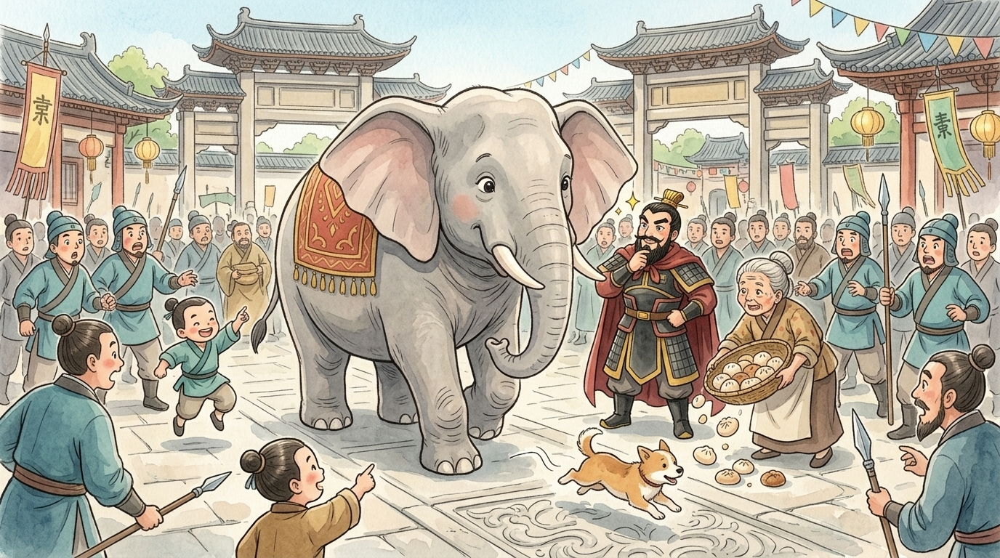
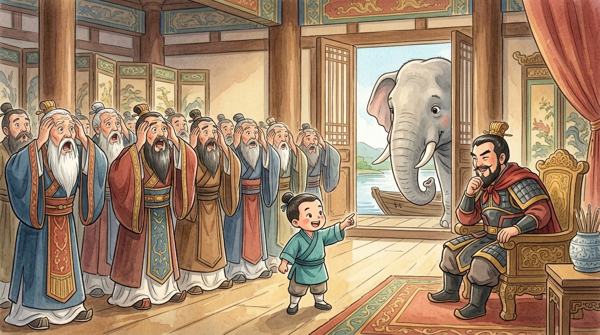
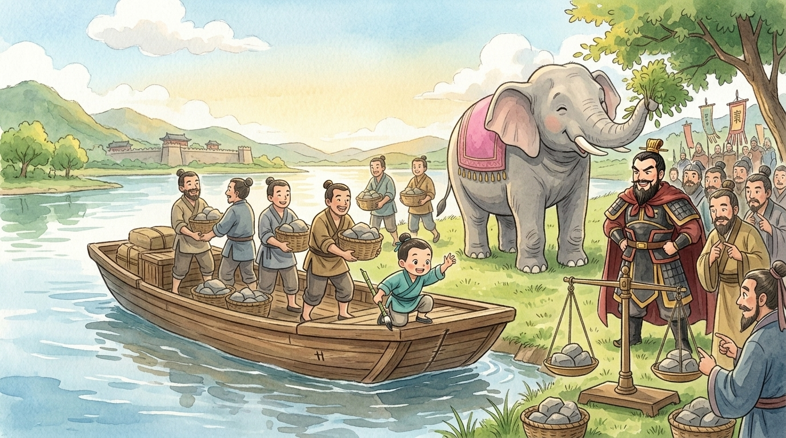

Trumpet-trumpet. Hello, small human. I am the elephant (大象). You may have heard a story about the day I was weighed — humans tell it constantly, and they always make it about the little boy. Fair enough; he earned it. But I was THERE, standing politely through the entire fuss, and nobody has ever asked for MY side of it. So flap your ears, settle down, and let a gentle giant tell you how the cleverest (聰明) idea I ever witnessed came from the smallest head in the room.1
🐘 A present with legs
I began this story as a present. Sun Quan (孫權), lord of the warm green south, wished to send something impressive to Cao Cao (曹操), the mighty warlord of the north — the kind of gift that says "we are friends, please notice how magnificent my friendship is." Gold? Common. Silk? Boring. So he sent me: an actual elephant, shipped upriver like a very dignified parcel, all the way to the north where no one — not one single person — had ever seen an elephant before.2
Oh, the ARRIVAL. Crowds lined the roads. Children pointed. Grown soldiers made sounds like children. One brave dog barked at me once, reconsidered, and left the county. I behaved beautifully, if I say so myself: ears like sails, steps like slow thunder, tail swinging with charm.
Cao Cao circled me twice, stroking his beard. He was delighted. He was amazed. And then his eyes narrowed with a question — and humans, I have learned, cannot leave a question alone.

🐘 The experts fail spectacularly
Now, understand: this was not idle curiosity. Cao Cao ruled by knowing things — how much grain in every storehouse, how many soldiers on every road. A thing he could not measure itched at him like a mosquito behind the ear. He turned to his ministers (大臣) — the wisest, most educated, most impressively bearded men in the north — and asked for a way to weigh (稱) me.
The first expert proposed the obvious: "Build a giant scale!" A fine idea, except the largest scale in the kingdom could weigh a pig, perhaps a cow having a bad day. There was no scale in all of China built for an elephant. I could have told them that. Nobody asked me.
The second expert had a bolder idea: "Cut the elephant into pieces, and weigh the pieces one at a time!" There was a long, cold pause. I stopped chewing. Cao Cao stared at the man the way you stare at someone who has suggested cutting up the birthday cake — when the cake is the GIFT, is ALIVE, and is LISTENING.3 The idea was declined. I resumed chewing, at a slightly nervous speed.
More beards wagged. Ropes and counterweights! (The ropes would snap.) Lift him with fifty men! (Fifty men cannot agree on lunch.) The great hall buzzed with impossible (不可能) plans, and slowly the buzzing died into an embarrassed silence. The mightiest court in the north, defeated by a question with four legs.
🐘 The smallest head in the room
And then, from somewhere around everyone's knees, a small voice said: "Father, I know how."
The voice belonged to Cao Chong (曹沖), Cao Cao's little son — six years old, barely taller than my knee, a boy I had already noticed because he was the only human who had watched ME more than the crowd. While the experts had argued, he had been down at the river, looking at boats (船). He had seen what every boatman sees a hundred times a day, and no one truly SEES: a boat sinks a little deeper for every load it carries.
The ministers smiled the way grown-ups smile at small children. Cao Cao did not. He knew this particular child. "Speak," he said.
Silence. Then the sound of twenty bearded men all realizing at once that a six-year-old had just solved it. One minister's mouth opened and closed like a fish. Another began nodding and could not stop. Cao Cao threw back his head and laughed with pure delight.4

🐘 My famous boat ride
So I, the elephant, went boating.
They led me down to the river, where the largest cargo boat waited. I stepped aboard with the dignity of a duchess — the boat groaned, the water rose, and the whole crowd gasped as the hull settled low. Little Cao Chong leaned out and scratched a mark (記號) in the wood, right at the waterline. Then I stepped ashore (the boat sighed with relief; rude), and the loading began.
Stones (石頭). Basket after basket of stones, passed hand to hand, splashing the boat lower and lower, while everyone watched the scratched line creep toward the water. "More!… more!… gently!…" — and then, at last: the river touched the mark. The exact same waterline. The stones in that boat now weighed precisely one elephant.
After that, it was easy — the part humans are good at. They unloaded the stones and weighed them basket by basket on ordinary scales, adding as they went. By sunset, Cao Cao had his number, the ministers had their humility, and I had eaten an entire tree while nobody was watching. A perfect day.5

🐘 What the elephant never forgot
Humans still tell this story after 1,800 years — 曹沖稱象, "Cao Chong weighs the elephant" — and elephants, who famously never forget, still tell it too. But listen to what an eyewitness says it truly means.
The ministers failed because they asked, "How do we build a scale big enough for an elephant?" — hammering at the impossible door. The boy succeeded because he asked a different question entirely: "How do I turn one giant problem into many small ones?" One unweighable elephant became a hundred weighable baskets of stones. The river did the hard part for free. That is real cleverness (聰明), small human: not knowing more answers — asking a better question.6
So the next time a problem stands in front of you looking as big as, well, me — a mountain of homework, a project too huge to start — do what the small boy did. Don't fight its bigness. Slice it into baskets of stones, and carry them one at a time. Any problem that can be split… is already half solved. Trumpet-trumpet. 🐘